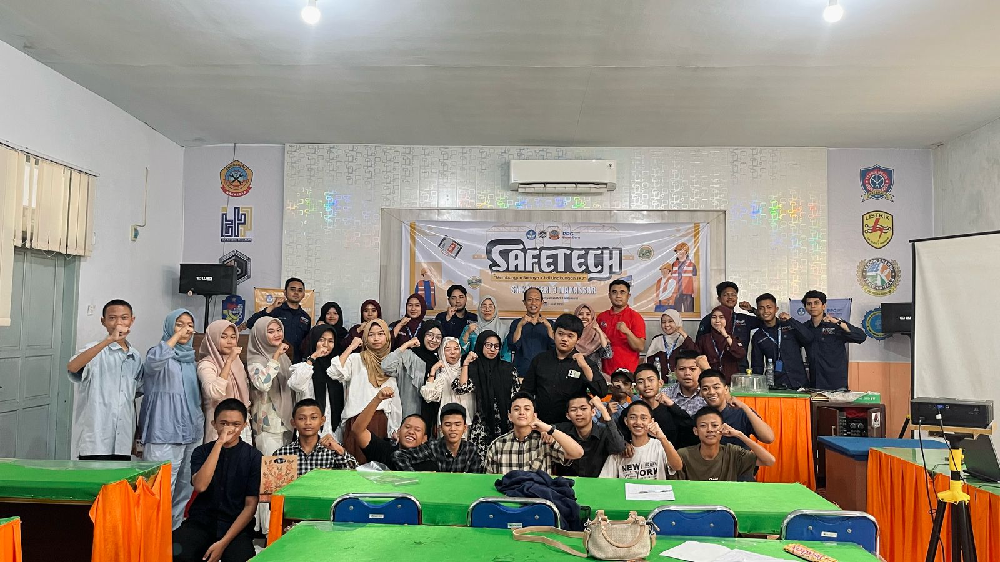
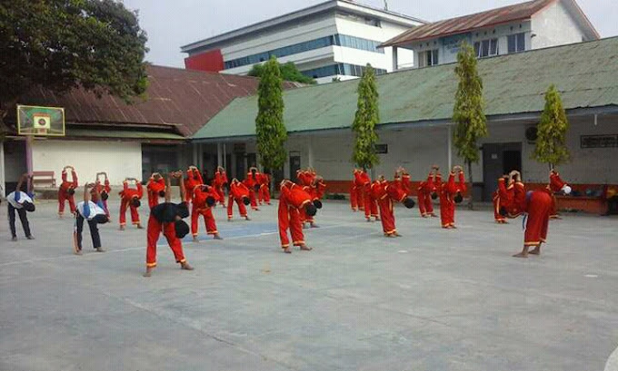
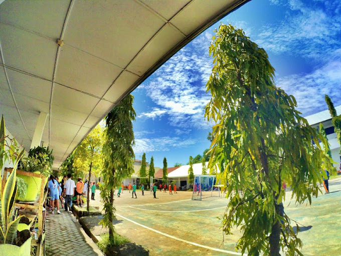

Mewujudkan siswa berprestasi, siap kerja, dan berkarakter.
Visi: Terwujudnya Peserta Didik Yang Beriman,Cerdas,Terampil,Mandiri Dan Berwawasan global.
Misi:
Sejarah Singkat:
Berikut adalah beberapa dokumentasi kegiatan dan fasilitas di SMKN 3 Makassar:
  Alamat: Jl. Bonto te'ne No.36, Makassar, Sulawesi Selatan
Email:@smkn3makassar.sch.id
Telepon: (0411) 123456
Instagram: @smkn3makassar